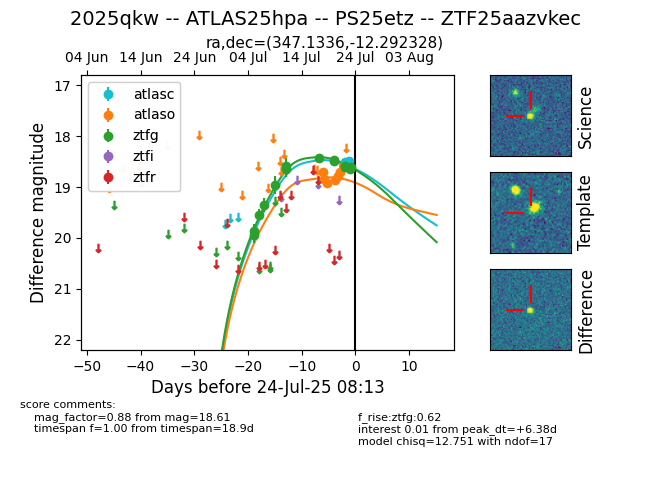

Target ZTF25aazvkec at 2025-07-24 08:13, see:
FINK: fink-portal.org/ZTF25aazvkec
Lasair: lasair-ztf.lsst.ac.uk/objects/ZTF25aazvkec
ALeRCE: alerce.online/object/ZTF25aazvkec
TNS: wis-tns.org/object/2025qkw
YSE: ziggy.ucolick.org/yse/transient_detail/2025qkw
alt names
ZTF25aazvkec (ztf,fink)
2025qkw (tns,yse)
PS25etz (panstarrs)
ATLAS25hpa (atlas)
coordinates:
equatorial (ra, dec) = (347.1336,-12.29233)
galactic (l, b) = (59.4790,-61.69917)
photometry
last atlasc=18.50, atlaso=18.70, ztfg=18.61
2 atlasc, 6 atlaso, 14 ztfg detections
